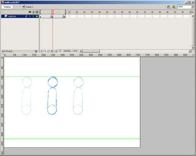
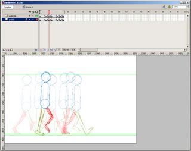

There are two ways to approach a walk cycle.
You can draw it with your character standing in place, or with the character moving across the screen (or page, but this is a flash tutorial, so I'll stick with screen).
Making a walk cycle with character staying in place is a TERRIBLE way to do a walk cycle. It might look okay when it's on that invisible treadmill, but if you want the character to move across the screen, either the feet are going to slide on the ground (a huge pet peeve of mine), or, if you plant the feet, the movement of the character will be jerky. I worked with a guy who spent a loooong time making his walk cycle "perfect" but once he got the character off that treadmill, and tried planting the feet, it was a disaster. And I've certainly been guilty of this mistake myself. Here is my first walk cycle I ever did in my life (for an introduction to Flash class in college). The design is so ugly that I'm only showing you the ugly hips and legs.
Here is the walk cycle on the treadmill.
And here is it moving across the screen, with his feet planted.
Yuck. When you walk you have a consistent speed, but this guy's pace is all over the place.
The right way to animate a walk cycle is to have the character moving in space. Working this way, it's easy to keep the feet planted and the speed consistent. But a lot of people avoid this method because it's hard to keep a character's volumes consistent when it's moving through space.
But using Flash, I came up with a way to combine the two techniques, and get the best of both worlds. For simplicity's sake, I'm going to do a super boring, torso and legs only, Richard Williams walk cycle, but once you get this technique down, you can alter it and get interesting walks from it as well.
First, draw your torso and head.
Now make this drawing a symbol (I called mine Walkcycle because I'm original), and put the head and torso on separate layers. Also make this symbol as long as your walk cycle will be. Mine repeats the first pose at frame 17, so I make mine 17 frames long.
{kind=link}
Go back out to the stage. Move your symbol over to the left. Decide how far your character will go in two steps, and key out that length at the frame number where your loop repeats (frame 17 for me). Then create a motion tween, and make sure there is NO EASING on the tween.
{kind=link}
The motion tween gives us perfectly equal spacing for each frame of our walk. Now for my cycle, I'm going to start with the two contact poses. The first contact pose happens on frame 1 and frame 17. The second contact pose happens on frame 9. So go to frame 9 and add a keyframe. Then remove the motion tweens.
{kind=link}
Now we need to worry about the legs, so make a new layer underneath your torso layer, and label it Sketch. We'll be doing rough drawings on this layer.
{kind=link}
I start by drawing the legs for the first contact pose on the sketch layer. This pose is the same as the pose for frame 17, so I copy the frame, paste it on frame 17, and line it up with the torso there.
Now move to frame 9, and sketch out your contact pose there. Since we've already sketched the first and third contact, it's very easy to see where the feet go for the second contact. If you find that your second contact pose is more compact or wide than you like, just go alter the first pose, and that should fix your problem.
{kind=link}
Now our breakdown poses are on frame 5 and 13. In a standard walk this is our pass position, where the back leg now becomes the front leg. The first thing we want to get is the horizontal position for this pose, so motion tween your symbol, and add keyframes at frame 5 and 13. Then remove the motion tween.
{kind=link}
We bounce when we walk, so we need some vertical motion as well. To do this, go inside your walk cycle symbol and move the head and torso up a bit at frames 5 and 13. Also, make sure to rekey your head and torsos at frame 9 and 17 to their original height.
{kind=link}
Go back out on the stage, and, on the sketch layer, draw your legs for the pass position.
{kind=link}
And now you should have an animation like this
{kind=link}
Not the most exciting walk, but you get the idea. Next comes the inbetweens. Let's start with the the up positions on frames 7 and 15. Make your motion tweens, key out the walk cycle symbol at frames 7 and 15. Remove the tweens, go inside the walk cycle symbol and adjust the torso and head to be at their highest position. Then go out on the stage and sketch your legs.
Then do the same thing for the down position at frames 3 and 11.
{kind=link}
And let's see what we got here.
{kind=link}
Okay so now we have the right leg positions for our walk. But chances are, your leg volumes are inconsistent (mine sure are). To fix this, we do our leg clean ups INSIDE the walk symbol. This way we use our original sketch as reference for the correct foot position, but when when we're inside the symbol, our torso isn't moving, so it much easier to compare the volumes of each leg. This is basically the Flash version of a traditional animation technique, which was explained really well by the disgustingly young and talented Matt Williames on his blog Hand Drawn Nomad Zone. (working professionally for Warner Brothers at age 14????)
So go inside your walk cycle symbol, and create two new layers, one for each leg. Then at frame one, go inside your symbol and draw your cleaned up leg. Move to frame 3 on the stage, go inside the symbol and clean up those legs etc etc. I cleaned up one leg at a time, and worked straight ahead. This helped me keep track of things like the spot where the leg connects to the hip, and the angle of the thighs and shins. I would also start the clean drawing with the rough visible, but then turn off the rough to finish the clean drawing on it's own.
{kind=link}
When you're done, you'll have a walk that moves through space, but also one that can be stationary, if you keep the symbol stationary. Here's my "final". For yours, I would recommend at least adding arms and a head bounce. And if you're really good, you'll also redraw the torso and hips so that they twist in space and don't look like the super lame stiff animation that gives Flash it's bad reputation.
Now you probably want more than two steps out of your cycle. To do this, on the stage, copy your frames, and on a new layer paste them starting on frame 17. Then using the edit multiple frames option, move these newly pasted frames so that they start where the bottom layer stops.
Now move the top layer frames down into the bottom layer. Then go inside the walk cycle symbol, copy all the frames, and paste them starting at frame 17, so that now your walk cycle is 33 frames long. Then go back out to the stage, select all your frames, right click and select Synchronize Symbols.
{kind=link}
And you can keep doing this as long as you want, to make any length walk cycle you desire. Here's my walk cycle moving across the whole stage.
{kind=link}
Again, this walk cycle is REALLY boring, I know. But you can do more interesting ones using the same basic technique. Here's one I did last year.
And once more, I am now offering this tutorial's FLA for 3 dollars through PayPal. Currently it's only available for Flash CS3 and up, but if there's demand I can make it for other versions as well. The FLA includes the walk cycle symbol, the leg sketch layers and the elf walk cycle.
19 comments:
wow, really great tutorial!
Adam, I really like your thinking, I am gonna try this out when I have some time.
WOW this is amazing.
hmm, I really don't understand why you do not like the first set of blue legs walking across the screen (where you commented "yuck" and said his pace was all over the place.) It looks good and smooth to me when I look at it. At any rate, THANK YOU for sharing your experience and this tutorial. I wish you the BEST!! :)
lol!! i loved the walking elfs
For the bad walk cycle example, I will admit it wasn't as bad as I was hoping it would be. However if you watch it, the speed of the walk is not consistant, there is a pretty big jump between two of the frames.
At my first job I did a really awful walk cycle for a character, and it got reused in all 26 episodes. I was hoping to use that as the example, but I couldn't find it. If anyone from Soup2Nuts is reading this and has Sam's profile walk file, send it my way.
Nice job! Great tutorial!
Adam, this is fabillis. Very well explained. I shall direct my students to this.
Great tutorial Adam!, I made walk cycles before but your approach seems better to me
Great Tutorial,and its works!
excelente, gracias. trabajo con flash pero haciendo cosas básicas. Me gusta dibujar, así que manos a la obra!!
gracias
gud work gracias it helps me a lot for making a walk cycle for my job applied for.your details and step by step lessons are superb.again thx.bless u
This really helped.. Thanks Adam. Keep up the good work!
People should read this.
Hi,
I have a question.
I want to make a fashion show on my site. I have a background, a catwalk and a model (I draw and scanned it) I want the model walk on the catwalk. How can I do that? With which flashplayer?
lol
nice
Do you make two individual leg - right and left. And do you convert the legs to symbols?
adam..this one is really great..I will really try this to make..wish u all the best adam and thnks 4 sharing this.Tk care
Post a Comment